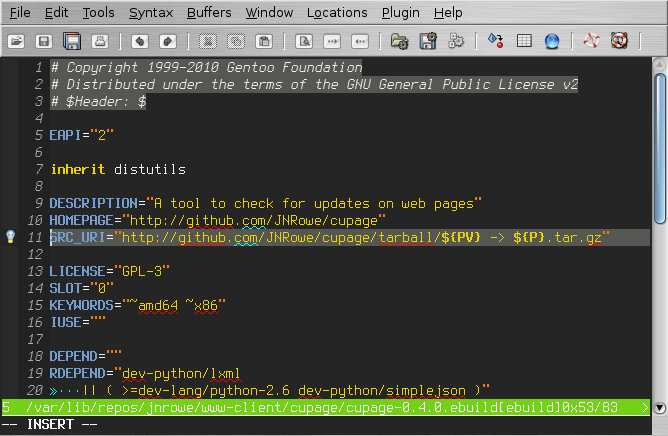
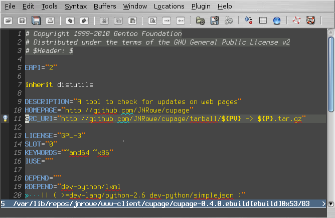
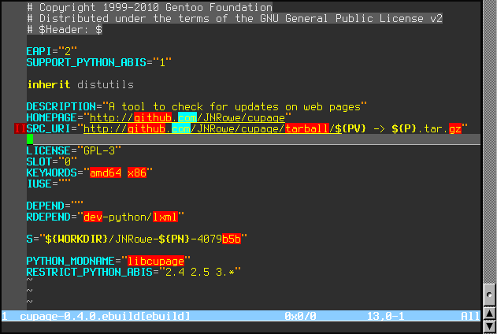

What the vim world really needed is another colourscheme, so here it is.
If you prefer lighter backgrounds, use the following:
let g:jnrowe_dark = 0
colorscheme jnrowe
With g:jnrowe_dark set it will look more like this:
Recent versions also work in terminals that support at least 88 colours, such as rxvt-unicode or xterm. The display is highly dependent on the settings of your terminal application, on my desktop it looks like this:
